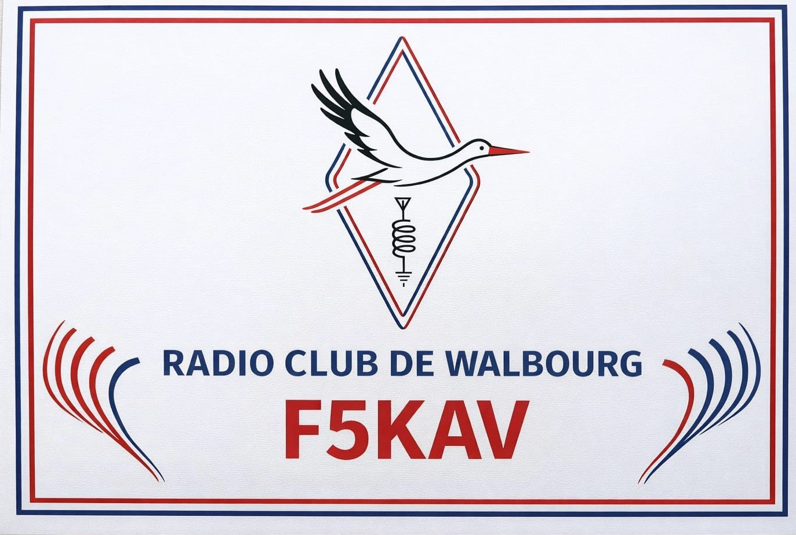

Indicatif F4LMS
Radioamateur
Titulaire de la licence HAREC, je suis passionné par les communications radio sous toutes leurs formes : HF, VHF/UHF, modes numériques, et expérimentation d'antennes.
La radio amateur me permet de combiner ma passion pour l'électronique, l'informatique et la communication à l'échelle mondiale - parfois sans aucune infrastructure intermédiaire.

Club F5KAV